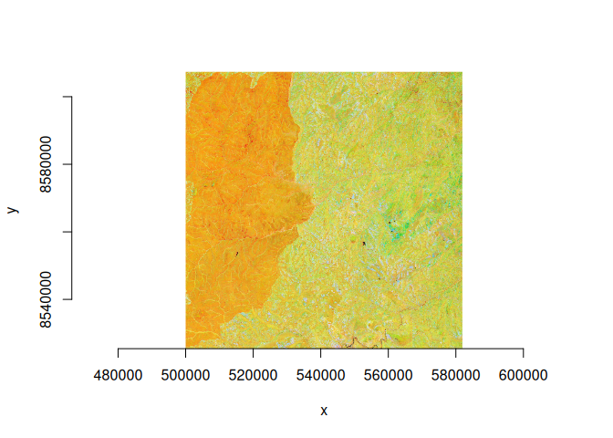

Warp speed. cptkirk is a remote, overview-aware gdalwarp.
It combines two tools that are each best-in-class at one thing:
-
async-tiffsaturates remote byte-range reads of (Cloud-Optimised) GeoTIFFs and decodes tiles concurrently. -
GDAL (via
gdalraster) is the best warper there is.
cptkirk is the thin pipe between them. From a gdalwarp-style request it works out exactly which source pixels the warp will need, streams only those tiles over async-tiff at the appropriate overview level, stages them as an in-memory GDAL source, then hands the actual reprojection and resampling to GDAL. It reimplements none of GDAL’s warp logic; it only sizes the fetch.
Installation
# requires a Rust toolchain (rustc >= 1.78) and GDAL (via gdalraster)
pak::pak("belian-earth/cptkirk")Usage
library(cptkirk)
# inspect a remote COG (header + IFDs only, no pixels fetched)
url <- paste0(
"https://data.source.coop/tge-labs/aef/v1/annual/2021/36S/","xekh5rjs4wg6wb9b4-0000000000-0000000000.tiff")
cog_info(url)
#> ── cog_info ────────────────────────────────────────────────────────────────────
#> <https://data.source.coop/tge-labs/aef/v1/annual/2021/36S/xekh5rjs4wg6wb9b4-0000000000-0000000000.tiff>
#> size: 8192 x 8192 px (67.1 Mpx)
#> bands: 64 Int8
#> resolution: 10 (CRS units)
#> crs: EPSG:32736
#> nodata: -128
#> overviews: 13 (8192x8192, 4096x4096, 2048x2048, 1024x1024, 512x512, 256x256,
#> 128x128, 64x64, 32x32, 16x16, 8x8, 4x4, 2x2, 1x1)
#> band names: "A00", "A01", "A02", "A03", "A04", "A05", …, "A62", and "A63"
# warp an area of interest straight to a local GeoTIFF
r <- warp_remote(
src = url,
dst = tempfile(fileext = ".tif"),
tr = c(30, 30), # target resolution
r = "average",
bands = c(1, 2, 3) # subset bands
)
ds <- new(gdalraster::GDALRaster, r)
gdalraster::plot_raster(ds, xsize=800, ysize=800)
ds$close()te/tr/ts/r/t_srs follow the gdalwarp interface. Any additional raw gdalwarp flags pass straight through via cl_arg and are forwarded to gdalraster::warp().
How it picks what to fetch
- Window. The target extent is reprojected into the source CRS (with edge densification) to find the source-pixel window the output covers.
- Overview. The target resolution is mapped into source units to pick the finest overview level whose decimation does not exceed what the output needs.
-
Bands.
bands =subsets at the fetch, so only the requested bands’ bytes are streamed.
The streamed window becomes an in-memory GDAL dataset; GDAL does the rest.